Photos
Ooh, a rock 'n' roll scrapbook! Recent photos are at the top. Scroll south to take a trip down memory lane. (And keep coming back. We're adding more photos all the time.)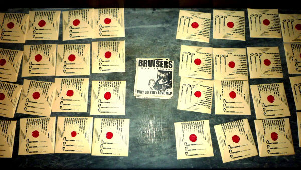
Pressing party (2010-9-16, D. Olivier)
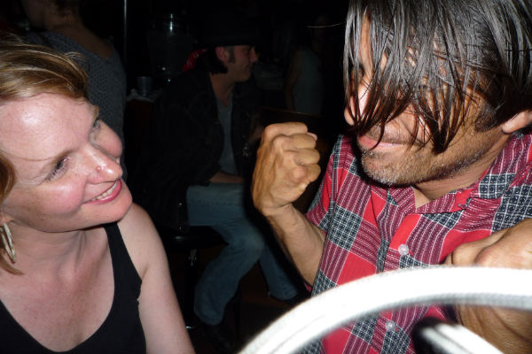
Sarah, not taking Jason's menacing fist very seriously (2010-5-1, D. Olivier)
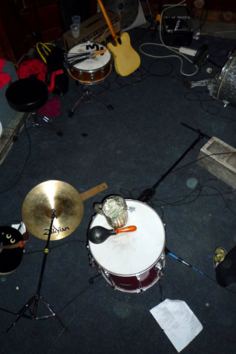
After the show, Circle Bar (2009-11-14, D. Olivier)
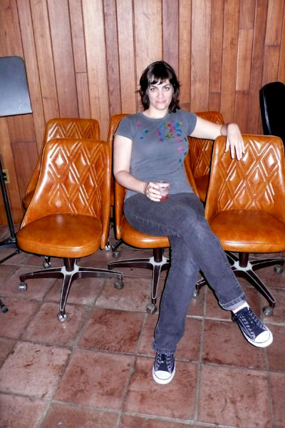
Mary, Studio in the Country (2008-7-20, D. Olivier)
Jason and his albums, before heading out to Studio in the Country: "You place the needle in the groove..." (2008-7-20, D. Olivier)
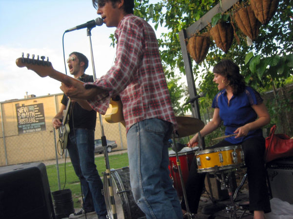
Outside in the garden at Ernie K-Doe's Mother-in-Law Lounge; taken by June, Bruiser Dave's (then) four-year-old daughter. Dave is apparently trying to eat the sky. (2008-6-15, J. Olivier)
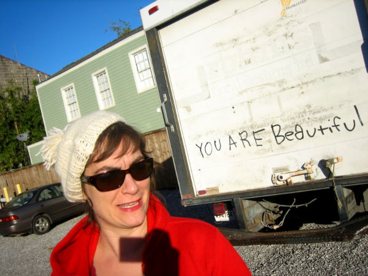
Mary, oustide the practice space: "YOU ARE Beautiful" (2008-1-13, D. Olivier)
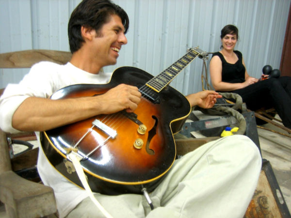
Jason and Mary (2007-10-5, D. Olivier)
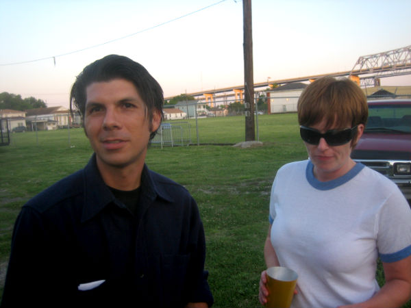
Jason and Peggy at Mardi Gras World, waiting to play the roller derby half-time show (2007-5-19, D. Olivier)
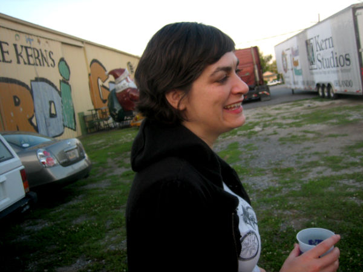
Mary at Mardi Gras World (2007-5-19, D. Olivier)
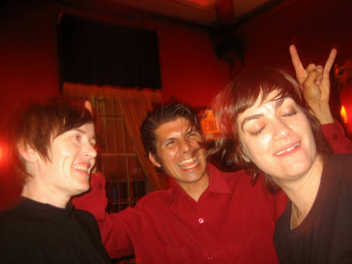
Peggy, Jason, and Mary; Circle Bar (2007-4-19, D. Olivier)
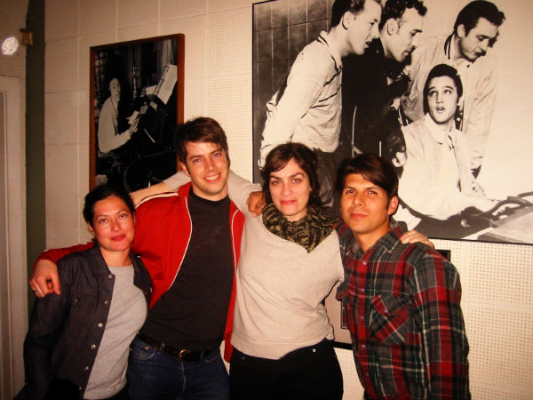
Sun Studios (2003-2-15)